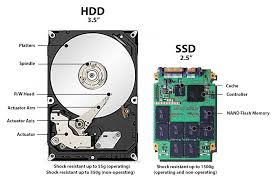
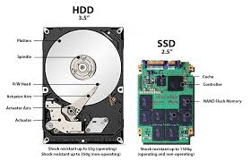
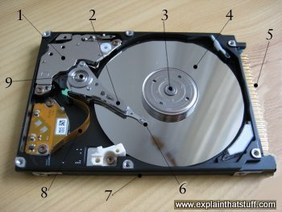
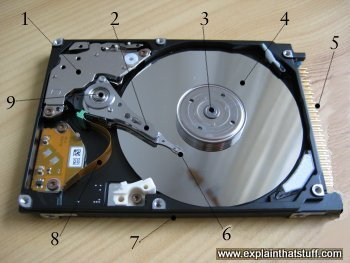

The world of CPUs has been notoriously busy in recent years making this decision really hard. With intel and AMD's battle for top CPU manufacturer getting more tense over 2020, it's far more difficult to choose a favorite. But in the end there's always a winner and unfortunately for intel, AMD takes the edge ever so slightly in this competition. But I'm only talking about best overall CPU as there could be others that perform better for much more specific tasks.
And the winner is The AMD Ryzen 5 3600. Coming in at $199.99, this 6 core/12 thread desktop processor will get you through almost anything and won't bankrupt you in the process. Intel's Core i5-10400F comes in a close second only because it requires a Z-series mother board (more on these in the future) to use memory clocked in higher than DDR4-2666MHz.
 

Solid-state drives are names so, specifically because they don’t rely on moving parts or spinning disks like the traditional hard drives. Instead, data is saved to a pool of NAND flash, whick is made up of what are called floating gate transistors. These transistor are designed to retain their charge state even when not powered up. making them non-volatile memory.
In NAND flash, a 0 means data is stored in a cell — it’s the opposite of how we typically think of a zero or one. NAND flash is organized in a grid. The entire grid layout is referred to as a block, while the individual rows that make up the grid are called a page. Common page sizes are 2K, 4K, 8K, or 16K, with 128 to 256 pages per block. Block size therefore typically varies between 256KB and 4MB. One advantage of this system should be immediately obvious. Because SSDs have no moving parts, they can operate at speeds far above those of a typical HDD. Sometimes even upto 100x ...
 

A hard drive stores data on a series of spinning magnetic disks called platters and an actuator arm with read/write heads attached to it. This arm positions the read-write heads over the correct area of the drive to read or write information. Because the drive heads must align over an area of the disk in order to read or write data, and the disk is constantly spinning, there’s a delay before data can be accessed.
The drive may need to read from multiple locations in order to launch a program or load a file, which means it may have to wait for the platters to spin into the proper position multiple times before it can complete the command. If a drive is asleep or in a low-power state, it can take several seconds more for the disk to spin up to full power and begin operating.